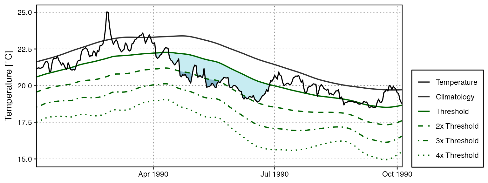
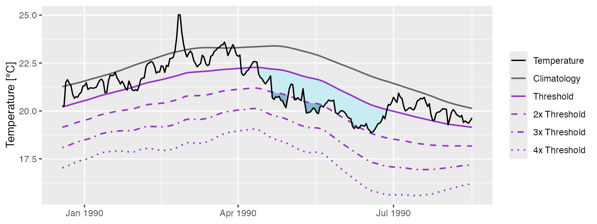
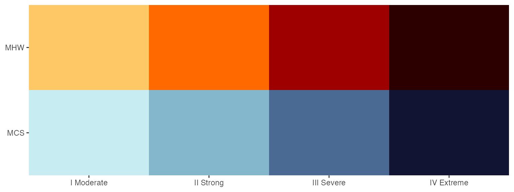

Calculating and Visualising Event Categories
Robert W Schlegel
2023-11-11
Source:vignettes/event_categories.Rmd
event_categories.RmdCategories
In Hobday et al. (2018) a naming convention for MHWs was proposed that divides them into four categories based on their maximum observed intensity. The naming convention and a brief description are as follows:
| Category | Description |
|---|---|
| I Moderate | Events that have been detected, but with a maximum intensity that does not double the distance between the seasonal climatology and the threshold value. These are common and not terribly worrisome. |
| II Strong | Events with a maximum intensity that doubles the distance from the seasonal climatology to the threshold, but does not triple it. These are not uncommon, but have yet to be shown to cause any long term biological or ecological damage. |
| III Severe | Thankfully these are relatively uncommon as they have been linked to damaging events. The 2003 Mediterranean MHW was this category. |
| IV Extreme | Events with a maximum intensity that is four times or greater than the aforementioned distance. These events are currently rare, but are projected to increase with frequency. This is troubling as events in this category are now well documented as causing widespread and lasting ecological damage. The 2011 Western Australia MHW was this category. It is also the logo of this package. |
Calculating MHW categories
The categories of MHWs under the Hobday et al. (2018) naming scheme
may be calculated with the heatwaveR
package using the category() function on the output of the
detect_event() function. By default this function will
order events from most to least intense. Note that one may control the
output for the names of the events by providing ones own character
string for the name argument. Because we have calculated
MHWs on the Western Australia data, we provide the name “WA” below:
# Load libraries
library(dplyr)
library(tidyr)
library(ggplot2)
library(heatwaveR)
# Calculate events
ts <- ts2clm(sst_WA, climatologyPeriod = c("1982-01-01", "2011-12-31"))
MHW <- detect_event(ts)
MHW_cat <- category(MHW, S = TRUE, name = "WA")
# Look at the top few events
tail(MHW_cat)## event_no event_name peak_date category i_max duration p_moderate
## 85 60 WA 2012b 2012-12-31 II Strong 3.4230 14 64
## 86 29 WA 1999 1999-05-22 II Strong 3.6390 95 63
## 87 47 WA 2009 2009-03-25 II Strong 2.3773 7 57
## 88 72 WA 2015 2015-10-02 II Strong 2.4604 7 57
## 89 41 WA 2008a 2008-04-14 III Severe 3.8299 35 57
## 90 52 WA 2011a 2011-02-28 IV Extreme 6.5798 105 52
## p_strong p_severe p_extreme season
## 85 36 0 0 Spring/Summer
## 86 37 0 0 Fall/Winter
## 87 43 0 0 Summer
## 88 43 0 0 Winter/Spring
## 89 23 17 0 Summer/Fall
## 90 27 11 10 Spring-FallNote that this functions expects the data to have been collected in
the southern hemisphere, hence the argument S = TRUE. If
they were not, one must set S = FALSE as seen in the
example below. This ensures that the correct seasons are attributed to
the event.
res_Med <- detect_event(ts2clm(sst_Med, climatologyPeriod = c("1982-01-01", "2011-12-31")))
res_Med_cat <- category(res_Med, S = FALSE, name = "Med")
tail(res_Med_cat)## event_no event_name peak_date category i_max duration p_moderate
## 118 98 Med 2018b 2018-08-04 II Strong 4.7451 44 52
## 119 123 Med 2022c 2022-11-03 II Strong 3.5030 74 46
## 120 67 Med 2012b 2012-08-20 II Strong 4.3190 18 44
## 121 46 Med 2007c 2007-04-25 III Severe 4.0467 19 42
## 122 75 Med 2014 2014-10-18 II Strong 3.3443 144 39
## 123 96 Med 2018a 2018-04-28 II Strong 3.3185 11 27
## p_strong p_severe p_extreme season
## 118 48 0 0 Summer
## 119 53 0 0 Fall
## 120 56 0 0 Summer
## 121 53 5 0 Spring
## 122 60 0 0 Summer-Winter
## 123 73 0 0 SpringMultiple time series
If however we may want to determine the categories of event within a
set of time series that cross over the equator, we may set the argument
lat_col = TRUE to allow category() to
automagically detect the latitude of the events by searching for columns
named either ‘lat’ or ’latitude. See the vignette for detecting
events in gridded data for more examples of running
heatwaveR code on gridded data.
# Add lon/lat to the three default time series
ts_WA <- sst_WA |> mutate(site = "WA", lon = 112.625, lat = -29.375)
ts_NW_Atl <- sst_NW_Atl |> mutate(site = "NW_Atl", lon = -66.875, lat = 43.125)
ts_Med <- sst_Med |> mutate(site = "Med", lon = 9.125, lat = 43.625)
ts_ALL <- rbind(ts_WA, ts_NW_Atl, ts_Med)
# Calculate MHW categories by site
MHW_cat_ALL <- ts_ALL |>
group_by(site) |>
group_modify(~ {
.x |>
ts2clm(climatologyPeriod = c("1982-01-01", "2011-12-31")) |>
detect_event() |>
category(season = "peak", lat_col = TRUE)
}) |>
# Correct event names by site
mutate(event_name = case_when(!is.na(event_name) ~ stringr::str_replace(event_name, "Event", site)))
# View results
MHW_cat_ALL |>
arrange(-duration) |>
filter(!is.na(event_name)) |>
group_by(site) |>
group_modify(~ head(.x, 2L)) |>
dplyr::select(site:category, duration, season)## # A tibble: 6 × 7
## # Groups: site [3]
## site event_no event_name peak_date category duration season
## <chr> <int> <chr> <date> <chr> <dbl> <chr>
## 1 Med 75 Med 2014 2014-10-18 II Strong 144 Fall
## 2 Med 122 Med 2022b 2022-07-20 II Strong 79 Summer
## 3 NW_Atl 72 NW_Atl 2012c 2012-07-15 II Strong 239 Summer
## 4 NW_Atl 100 NW_Atl 2018a 2018-01-12 III Severe 171 Winter
## 5 WA 52 WA 2011a 2011-02-28 IV Extreme 105 Summer
## 6 WA 59 WA 2012a 2012-01-27 II Strong 101 SummerVisualising MHW categories
Default MHW category visuals
A quick and easy visualisation of the categories of a MHW may be
accomplished with event_line() by setting the
category argument to TRUE.
event_line(MHW, spread = 100, start_date = "2010-11-01", end_date = "2011-06-30", category = TRUE)
Custom MHW category visuals
Were one to want to visualise the categories of a MHW ‘by hand’, the following code will provide a good starting point.
# Create category breaks and select slice of data.frame
clim_cat <- MHW$clim %>%
dplyr::mutate(diff = thresh - seas,
thresh_2x = thresh + diff,
thresh_3x = thresh_2x + diff,
thresh_4x = thresh_3x + diff) %>%
dplyr::slice(10580:10690)
# Set line colours
lineColCat <- c(
"Temperature" = "black",
"Climatology" = "gray20",
"Threshold" = "darkgreen",
"2x Threshold" = "darkgreen",
"3x Threshold" = "darkgreen",
"4x Threshold" = "darkgreen"
)
# Set category fill colours
fillColCat <- c(
"Moderate" = "#ffc866",
"Strong" = "#ff6900",
"Severe" = "#9e0000",
"Extreme" = "#2d0000"
)
ggplot(data = clim_cat, aes(x = t, y = temp)) +
geom_flame(aes(y2 = thresh, fill = "Moderate")) +
geom_flame(aes(y2 = thresh_2x, fill = "Strong")) +
geom_flame(aes(y2 = thresh_3x, fill = "Severe")) +
geom_flame(aes(y2 = thresh_4x, fill = "Extreme")) +
geom_line(aes(y = thresh_2x, col = "2x Threshold"), size = 0.7, linetype = "dashed") +
geom_line(aes(y = thresh_3x, col = "3x Threshold"), size = 0.7, linetype = "dotdash") +
geom_line(aes(y = thresh_4x, col = "4x Threshold"), size = 0.7, linetype = "dotted") +
geom_line(aes(y = seas, col = "Climatology"), size = 0.7) +
geom_line(aes(y = thresh, col = "Threshold"), size = 0.7) +
geom_line(aes(y = temp, col = "Temperature"), size = 0.6) +
scale_colour_manual(name = NULL, values = lineColCat,
breaks = c("Temperature", "Climatology", "Threshold",
"2x Threshold", "3x Threshold", "4x Threshold")) +
scale_fill_manual(name = NULL, values = fillColCat, guide = FALSE) +
scale_x_date(date_labels = "%b %Y") +
guides(colour = guide_legend(override.aes = list(linetype = c("solid", "solid", "solid",
"dashed", "dotdash", "dotted"),
size = c(0.6, 0.7, 0.7, 0.7, 0.7, 0.7)))) +
labs(y = "Temperature [°C]", x = NULL)
Calculating MCS categories
MCSs are calculated the same as for MHWs. The category()
function will automagically detect if it has been fed MHWs or MCSs so no
additional arguments are required. For the sake of clarity the following
code chunks demonstrates how to calculate MCS categories.
# Calculate events
ts_MCS <- ts2clm(sst_WA, climatologyPeriod = c("1982-01-01", "2011-12-31"), pctile = 10)
MCS <- detect_event(ts_MCS, coldSpells = T)
MCS_cat <- category(MCS, S = TRUE, name = "WA")
# Look at the top few events
tail(MCS_cat)## event_no event_name peak_date category i_max duration p_moderate
## 81 77 WA 2018a 2018-08-02 II Strong -2.4311 46 67
## 82 40 WA 2000 2000-08-13 II Strong -2.2743 11 64
## 83 15 WA 1990 1990-05-11 II Strong -3.1883 76 62
## 84 53 WA 2005 2005-10-16 II Strong -1.8637 13 62
## 85 83 WA 2020 2020-05-25 II Strong -3.1433 41 61
## 86 11 WA 1987 1987-12-10 II Strong -2.4968 9 44
## p_strong p_severe p_extreme season
## 81 33 0 0 Winter
## 82 36 0 0 Winter
## 83 38 0 0 Fall
## 84 38 0 0 Spring
## 85 39 0 0 Fall
## 86 56 0 0 SpringVisualising MCS categories
Default MCS category visuals
The event_line() function also works for visualising MCS
categories. The function will automagically detect that it is being fed
MCSs so we do not need to provide it with any new arguments. Note that
the colour palette for MCS does have four colours, same as for MHWs, but
none of the demo time series that come packaged with
heatwaveR have MCSs that intense so we are
not able to demonstrate the full colour palette here.
event_line(MCS, spread = 100, start_date = "1989-11-01", end_date = "1990-06-30", category = TRUE)
Custom MCS category visuals
The following code chunk demonstrates how to manually create a figure showing the MCS categories.
# Create category breaks and select slice of data.frame
MCS_clim_cat <- MCS$clim %>%
dplyr::mutate(diff = thresh - seas,
thresh_2x = thresh + diff,
thresh_3x = thresh_2x + diff,
thresh_4x = thresh_3x + diff) %>%
dplyr::slice(2910:3150)
# Set line colours
lineColCat <- c(
"Temperature" = "black",
"Climatology" = "grey40",
"Threshold" = "darkorchid",
"2x Threshold" = "darkorchid",
"3x Threshold" = "darkorchid",
"4x Threshold" = "darkorchid"
)
# Set category fill colours
fillColCat <- c(
"Moderate" = "#C7ECF2",
"Strong" = "#85B7CC",
"Severe" = "#4A6A94",
"Extreme" = "#111433"
)
# Create plot
ggplot(data = MCS_clim_cat, aes(x = t, y = temp)) +
geom_flame(aes(y = thresh, y2 = temp, fill = "Moderate")) +
geom_flame(aes(y = thresh_2x, y2 = temp, fill = "Strong")) +
geom_flame(aes(y = thresh_3x, y2 = temp, fill = "Severe")) +
geom_flame(aes(y = thresh_4x, y2 = temp, fill = "Extreme")) +
geom_line(aes(y = thresh_2x, col = "2x Threshold"), size = 0.7, linetype = "dashed") +
geom_line(aes(y = thresh_3x, col = "3x Threshold"), size = 0.7, linetype = "dotdash") +
geom_line(aes(y = thresh_4x, col = "4x Threshold"), size = 0.7, linetype = "dotted") +
geom_line(aes(y = seas, col = "Climatology"), size = 0.7) +
geom_line(aes(y = thresh, col = "Threshold"), size = 0.7) +
geom_line(aes(y = temp, col = "Temperature"), size = 0.6) +
scale_colour_manual(name = NULL, values = lineColCat,
breaks = c("Temperature", "Climatology", "Threshold",
"2x Threshold", "3x Threshold", "4x Threshold")) +
scale_fill_manual(name = NULL, values = fillColCat, guide = FALSE) +
scale_x_date(date_labels = "%b %Y") +
guides(colour = guide_legend(override.aes = list(linetype = c("solid", "solid", "solid",
"dashed", "dotdash", "dotted"),
size = c(0.6, 0.7, 0.7, 0.7, 0.7, 0.7)))) +
labs(y = "Temperature [°C]", x = NULL)
Category colour palettes
For the sake of convenience the MHW and MCS colour palettes are provided below with a figure showing the direct comparison.
# The MCS colour palette
MCS_colours <- c(
"Moderate" = "#C7ECF2",
"Strong" = "#85B7CC",
"Severe" = "#4A6A94",
"Extreme" = "#111433"
)
# The MHW colour palette
MHW_colours <- c(
"Moderate" = "#ffc866",
"Strong" = "#ff6900",
"Severe" = "#9e0000",
"Extreme" = "#2d0000"
)
# Create the colour palette for plotting by itself
colour_palette <- data.frame(category = factor(c("I Moderate", "II Strong", "III Severe", "IV Extreme"),
levels = c("I Moderate", "II Strong", "III Severe", "IV Extreme")),
MHW = c(MHW_colours[1], MHW_colours[2], MHW_colours[3], MHW_colours[4]),
MCS = c(MCS_colours[1], MCS_colours[2], MCS_colours[3], MCS_colours[4])) %>%
pivot_longer(cols = c(MHW, MCS), names_to = "event", values_to = "colour")
# Show the palettes side-by-side
ggplot(data = colour_palette, aes(x = category, y = event)) +
geom_tile(fill = colour_palette$colour) +
coord_cartesian(expand = F) +
labs(x = NULL, y = NULL)